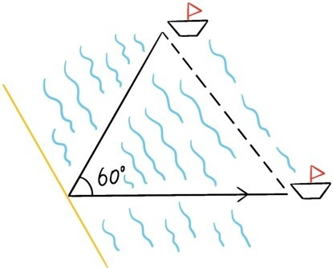
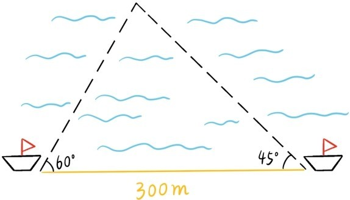
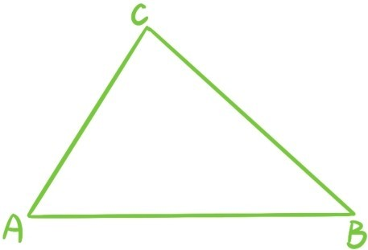
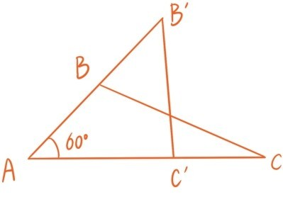
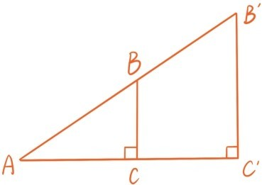
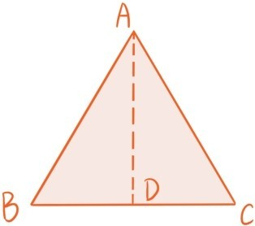
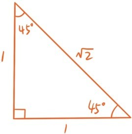
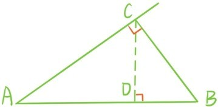

三角函数起源于天文、航海和建筑等方面的测量需要，下面是古人航海时常会碰到的两个典型问题：

1. 如果两艘船从同一个海岸口出发同时驶入大海，行驶速度分别是800米/时和1000米/时，且它们行驶方向的夹角是60°，那么半个小时后两艘船的距离是多少呢？要知道在大海上是无法直接测量距离的。
2. 如果两艘船分别从海岸线上相距300米的地方驶入大海，且它们的行驶方向与海岸线的夹角分别是60°，45°，如果它们相遇，那么它们分别行驶多长距离后才会相逢？

如果将这类航海问题提炼成数学语言就是：
1. 在△ABC中已知AB与AC的长度以及夹角∠A，如何计算对边BC的长度。
2. 在△ABC中已知AB的长度以及∠A，∠B，如何计算AC与BC的长度。

平面几何中的边角边全等判定定理告诉我们知道AB与AC的长度和夹角∠A就足以确定对边BC的长度，角边角定理也说明知道AB的长度以及∠A，∠B就足以确定AC与BC的长度，但是实际应用关心的是能否将BC表示成关于AB，AC和∠A的一个具体表达式，能否将AC与BC表示成关于AB，和∠A，∠B的具体表达式。
先来考虑第1个问题，如何将BC表示成AB、AC和∠A的一个具体表达式。注意，如果将△ABC放大8倍或10倍，那么每条边都变成原先的8倍或10倍，但是∠A却一直不变。所以，如果有这样的表达式，∠A在其中一定与某些边的比值挂钩。但是，仅仅确定∠A，比如仅仅知道∠A=60°，并不能确定△ABC中任何两条边的比值。

不过，如果限制在特殊的三角形——直角三角形上的话，那么根据相似三角形的判断定理，确定一个锐角∠A的话，三角形的3条边的比值也就确定了。

因此要引入直角三角形ABC中两个关于锐角∠A的函数，第一个是对边与斜边的比值，称为正弦函数，记作sin∠A，通常缩写为sinA，
另一个是邻边与斜边的比值，称为余弦函数，记作cos∠A，缩写为cosA，
根据定义，∠A的正弦函数值正是∠B的余弦函数值，所以
sin∠A=cos(90°-∠A)。
下图中△ABC是边长为1的等边三角形，D是BC中点，根据第四章的定理3.8，∠ADB=90°，∠BAD=30°，所以sin30°= 。根据勾股定理，AD=，所以cos30°=，进一步又可以得到cos60°= ，sin60°=。

一个等腰直角三角形，如果两条直角边长度都为1，则由勾股定理，斜边长度为，所以sin45°=cos45°=。

如果将勾股定理的等式BC2+AC2=AB2两边同时除以AB2，就会得到另一个关于正弦余弦函数的等式：
sin2A+cos2A=1
提问时间
6.1.1 已知0°<α<90°且，求sin(90°-α)，cosα和cos(90°-α)。
6.1.2 在下图中，请用BC与sinA表示AD。

6.1.3 证明：若0°<α<β<90°，则sinα<sinβ，且cosα>cosβ。（提示：利用第四章定理2.11）